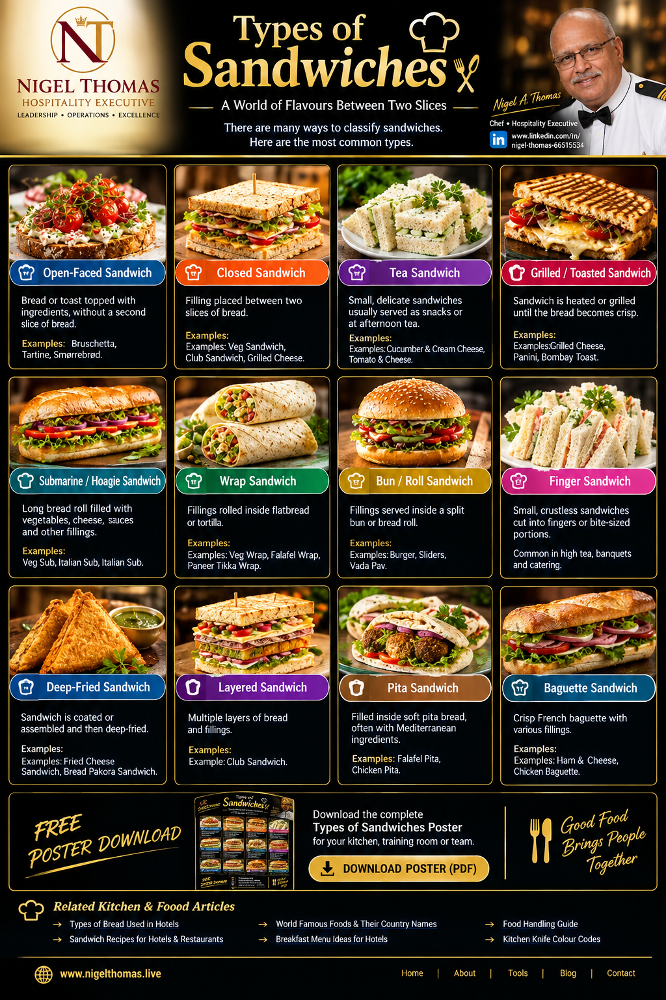

Kitchen & Food | Culinary Operations | Training
The Sandwich as a Complete Kitchen Operation
A sandwich is one of the most useful teaching products in a professional kitchen. It looks simple, but a well-executed sandwich requires purchasing discipline, mise en place, knife skills, portion control, food safety, timing, presentation and service awareness. This guide classifies the principal sandwich formats and explains how a chef can turn them into reliable hotel, restaurant, cafe, banquet and room-service products.
Why Sandwich Classification Matters in a Professional Kitchen
A sandwich looks simple to a guest because the final product is often served in a few minutes. In a professional kitchen, however, a sandwich is a small production system. Bread, filling, sauce, garnish, temperature, texture, portion control, holding time, packaging and presentation all have to work together. When a chef understands the different sandwich families, menu development becomes easier because the team can create variety without creating unnecessary complexity. Classification is therefore not just an academic exercise. It is a practical tool for purchasing, mise en place, training, costing and service.
The twelve styles shown on this poster cover several of the most useful categories for hotel restaurants, cafes, banquets, room service and casual dining. Open-faced sandwiches use one visible base and put the ingredients on display. Closed sandwiches use two slices or pieces of bread to protect the filling and make the product portable. Tea sandwiches focus on small portions and delicate presentation. Grilled and toasted sandwiches introduce heat and crispness. Submarine and wrap formats create useful alternatives for takeaway and high-volume service. Bun or roll sandwiches are especially important for burgers and regional street-food menus. Finger sandwiches suit afternoon tea, meetings and catering. Deep-fried and layered sandwiches add indulgence and visual height.
From a chef's point of view, the classification also helps the kitchen control food cost. A single roast chicken preparation can become a club sandwich, wrap, baguette filling or tea sandwich with only modest changes in mise en place. The same tomato, lettuce, onion, cheese and sauce components can appear across several menu items. This is one of the basic principles of efficient menu engineering: create enough choice for the guest while keeping the kitchen's purchasing and preparation system manageable.
1. Open-Faced Sandwich
An open-faced sandwich is built on one slice of bread or toast with the topping fully visible. This format is excellent when appearance is part of the selling point. Bruschetta, tartines and Scandinavian-style smørrebrød are useful examples. Because there is no second slice hiding the filling, the chef must think about colour, height and balance. The bread should be strong enough to carry the topping without becoming soggy.
For professional service, the base can be toasted immediately before assembly. Moist ingredients should be drained, and sauces should be controlled rather than flooded over the bread. A well-designed open-faced sandwich can work as a breakfast item, light lunch, bar snack, canapé-sized tasting portion or room-service selection. It is also a good format for showcasing premium ingredients because the guest can see exactly what has been purchased and prepared.
2. Closed Sandwich
The closed sandwich is one of the most adaptable formats in hospitality. Two slices of bread hold a filling such as grilled vegetables, chicken, cheese, egg, tuna or cold cuts. Club sandwiches and many classic hotel sandwiches belong to this family. The biggest operational advantage is portability: the sandwich can be wrapped, boxed or sent to a guest room with relatively little risk of the filling escaping.
A chef should pay attention to moisture migration. Tomatoes, cucumber, sauces and heavily dressed salads can soften bread if the sandwich is prepared too early. Spread a protective layer of butter, mayonnaise or another suitable spread when appropriate, drain wet ingredients and assemble as close to service as possible. Cutting the sandwich consistently is also important because portion appearance influences the guest's perception of value.
3. Tea Sandwich
Tea sandwiches are small, neat and deliberately restrained. They are associated with afternoon tea, banquets, corporate meetings and elegant catering. Common fillings include cucumber and cream cheese, egg mayonnaise, smoked salmon, chicken and delicate vegetable combinations. Crusts may be removed and the sandwiches cut into fingers, triangles or small squares.
The chef's priority is refinement rather than quantity. Bread should be fresh and thin, fillings should be evenly distributed, and the finished pieces should be easy to eat without utensils. Because these sandwiches are often displayed for a period of time, moisture management is critical. Cover prepared sandwiches appropriately, avoid excessive dressing and maintain the correct holding conditions for the ingredients being used.
4. Grilled or Toasted Sandwich
Heat changes a sandwich dramatically. Grilling or toasting creates crisp edges, browned surfaces and melted cheese while warming the filling. Grilled cheese, panini and Bombay toast are familiar examples. A professional kitchen needs a repeatable method: consistent bread thickness, controlled equipment temperature and a defined cooking time.
The most common mistake is excessive heat. A sandwich can become dark on the outside before the cheese melts or the centre becomes hot. Another mistake is overloading the filling. A thinner, balanced sandwich often produces a better finished product than a thick sandwich that cannot heat evenly. For a busy operation, portioned fillings and preheated contact grills can help maintain speed and consistency.
5. Submarine or Hoagie Sandwich
The submarine or hoagie format uses a long roll filled with ingredients such as meats, cheeses, vegetables and sauces. It is particularly useful for takeaway, delivery and casual dining because the shape provides a generous filling-to-bread ratio. The long roll can also be divided into portions for sharing.
From a chef's perspective, the bread must have enough structure to survive the filling and sauce. Crisp vegetables can provide contrast to soft meat and cheese, while acidity from pickles, vinegar or other condiments can prevent the sandwich from tasting heavy. Mise en place should be organised so that the team can build the sandwich rapidly without compromising portion standards.
6. Wrap Sandwich
Wraps use flatbread or tortillas to contain fillings in a compact cylindrical format. They are useful for vegetarian menus, health-focused selections, breakfast service, staff meals and takeaway. Falafel wraps, paneer tikka wraps and chicken wraps can share many ingredients with other kitchen dishes, which makes the format operationally efficient.
Rolling technique matters. The filling should not be placed too close to the edge, and the wrap should be folded before being rolled tightly enough to hold its shape. Wet sauces should be used carefully because excessive moisture can weaken the flatbread. For takeaway, wrapping paper or suitable food packaging should preserve the shape while allowing some steam to escape when hot ingredients are used.
7. Bun or Roll Sandwich
Bun and roll sandwiches include burgers, sliders and regional preparations such as vada pav. They are built around a split bun or roll and can range from simple street-food items to premium restaurant dishes. The bun should complement the filling rather than compete with it. Texture is especially important: a soft bun can contrast with a crisp coating, while a toasted cut surface can provide flavour and structural support.
Burger operations benefit from precise portioning. Patty weight, bun size, cheese portion, sauce quantity and garnish should be standardised. This allows the kitchen to control food cost and ensures that a guest ordering the same item on another day receives a similar product. The chef should also consider holding time because a hot patty and wet sauce can quickly soften the bun.
8. Finger Sandwich
Finger sandwiches are closely related to tea service but deserve their own operational category because they are widely used in banquets, conferences and catering. Their small size allows guests to sample several flavours. A successful finger sandwich is easy to pick up, clean to eat and visually consistent across the platter.
For large events, production planning is essential. The chef should calculate the number of pieces per guest, prepare fillings in controlled batches and establish a cutting standard. A sharp knife or suitable sandwich cutter creates clean edges and reduces waste. Trimmings should be handled responsibly and may be repurposed where food-safety and recipe controls allow.
9. Deep-Fried Sandwich
Deep-fried sandwiches take the concept into indulgent territory. Fried cheese sandwiches, bread pakora sandwiches and similar preparations use a crisp coating or bread structure around a filling. The chef has to control oil temperature carefully. Oil that is too cool produces a greasy product, while oil that is too hot can brown the exterior before the centre is properly heated.
For a professional operation, fryer filtration, oil management, allergen controls and separation of raw and cooked products are just as important as the recipe itself. Fried items should be drained properly and served promptly so that the crust remains crisp. Sauces and chutneys should be portioned to complement the sandwich without making the coating soggy.
10. Layered Sandwich
Layered sandwiches build height by stacking several slices of bread and multiple fillings. The club sandwich is a classic example. Layering allows a chef to combine different textures and flavours in one portion, but it also introduces structural challenges. Too much filling can cause the sandwich to slide, while too much sauce can make the bread collapse.
A good layered sandwich is assembled with a clear sequence. Use stable ingredients as structural layers, keep slippery components controlled and use skewers where appropriate for service. The cutting angle should expose the layers so that the guest can immediately understand the product. This is a strong presentation format for hotel room service and casual restaurant menus.
11. Pita Sandwich
Pita sandwiches use a pocket or folded flatbread to hold fillings. Falafel pita and chicken pita are common examples, but the format can support many vegetarian and meat-based combinations. The pocket provides an efficient way to contain the filling, but it should not be overfilled.
A chef should consider the balance of hot and cold ingredients. Crisp lettuce, herbs, pickles and fresh vegetables can bring freshness to a hot filling, while tahini, yogurt-based sauces or other condiments provide moisture. Portioning the filling into the pocket rather than simply pushing it in at the end helps create a consistent product.
12. Baguette Sandwich
The baguette sandwich uses a crisp French-style loaf as the main structure. Its crust provides a strong textural contrast to soft fillings. Ham and cheese, chicken, roasted vegetables and many other combinations can be presented in this format.
Because baguettes can have a firm crust, slicing technique and portion size should be considered for the guest. For service operations, a slightly softer sandwich roll may sometimes be more practical than a very crusty loaf, especially for room service or older guests. The chef's responsibility is to choose the bread according to the guest experience rather than simply following a name.
How a Chef Builds a Better Sandwich Menu
A strong sandwich menu begins with a production plan rather than a list of fashionable names. Start with the bread families available to the kitchen. Then identify proteins, vegetables, cheeses, spreads and sauces that can cross-utilise across multiple items. The objective is not to make every sandwich identical; it is to reduce unnecessary purchasing while preserving meaningful differences for the guest.
Next, define portion standards. Record the weight of the principal protein, the amount of cheese, the number or weight of vegetable components and the standard sauce portion. These details make food-cost calculation realistic. Without portion control, a sandwich can appear profitable on paper but lose margin during service because every cook adds a little more filling.
Texture should also be designed deliberately. A sandwich is more interesting when it contains contrast: crisp with soft, cool with warm, acidic with rich, creamy with crunchy. The bread is part of that equation. A delicate tea sandwich requires a different bread strategy from a grilled panini or a fried sandwich.
Finally, design the menu around the equipment and staff available. A cafe with a contact grill can support toasted sandwiches efficiently. A hotel banquet kitchen may be stronger at cold finger sandwiches and platter production. A high-volume takeaway operation may benefit from wraps, rolls and burgers. The best menu is the one the kitchen can execute consistently at the required volume.
Food Safety and Sandwich Mise en Place
Sandwich production may look low risk because many items are assembled rather than cooked, but professional food safety still depends on disciplined control. Ready-to-eat ingredients should be protected from cross-contamination, chilled foods should remain within the operation's approved temperature controls, and raw animal products must be kept separate from ready-to-eat components.
Use clean, sanitised preparation surfaces and dedicated utensils where the operation requires them. Wash hands at the correct moments and control the movement of staff between raw preparation and ready-to-eat assembly. Label and date prepared fillings according to the hotel's food-safety system. Do not assume that a sandwich is safe simply because it contains bread.
Mise en place should be prepared in quantities that match the expected service period. Overproduction increases waste and can create unnecessary holding time. Underproduction creates service delays and pressure on the team. A good chef forecasts demand, prepares sensible batches and monitors the actual sales pattern so that the next service can be adjusted.
Food Cost, Menu Engineering and Profitability
Sandwiches can be profitable when their recipes are controlled. Calculate the edible portion cost of each component, then add the appropriate labour, overhead and target margin considerations used by the business. Do not judge a sandwich only by the price of the bread and filling. Packaging, garnish, sauces, side items and wastage all affect the real contribution.
Cross-utilisation is one of the strongest tools. Roast chicken used for a main course can also become sandwich filling. A tomato relish can support a burger, toasted sandwich or wrap. A cheese purchased for one menu category may work in several sandwich recipes. The goal is to reduce dead stock without creating a menu that feels repetitive.
Menu engineering also considers popularity. A sandwich that sells well and produces a healthy contribution deserves prominent placement and strong staff knowledge. A sandwich that is expensive to produce and rarely ordered may need reformulation or removal. The chef and operations manager should review sales data together rather than relying only on personal preference.
Service Standards for Hotels, Restaurants and Room Service
In a hotel, a sandwich is often judged by the complete guest experience rather than the recipe alone. The order should be taken accurately, the item should leave the kitchen at the correct temperature, packaging should be clean, and the presentation should survive the journey to the guest.
Room service creates special challenges. A toasted sandwich may continue steaming inside a closed container, making the bread soft. Packaging should therefore be selected to protect quality. Cold sandwiches require temperature control and should not be allowed to sit unnecessarily on a pass. Side dishes, condiments and cutlery should be checked before dispatch.
In restaurant service, communication between the kitchen and front office team is equally important. Servers should know the principal ingredients, major allergens according to the approved recipe information, available modifications and expected preparation time. When a guest asks for a change, the kitchen should assess whether the requested modification affects food safety, allergen risk, portion cost or cooking time.
Training the Kitchen Team
Sandwich preparation is an excellent training exercise because it teaches many fundamental kitchen disciplines at once. A junior cook can learn knife skills, portioning, mise en place, sauce control, presentation and service timing through a well-designed sandwich station.
Training should use visual standards. The team should know the correct bread, filling quantity, garnish, cut and plate or package for each menu item. A simple recipe card with a photograph can be more effective than a long verbal explanation. Supervisors should conduct periodic checks during busy service because standards often drift when order volume increases.
The chef should also teach the reason behind each standard. If a cook understands that too much sauce makes bread soggy, that excessive filling causes poor structural balance, or that inconsistent portions damage food cost, the standard becomes easier to remember. Training is strongest when the team understands both the method and the business reason.
Final Chef's Perspective
The sandwich is one of the most versatile formats in professional food service. It can be elegant or casual, hot or cold, vegetarian or meat-based, simple or highly engineered. What separates a professional sandwich from an improvised one is consistency. The bread, filling, sauce, temperature, texture, portion and presentation should all have a reason.
Use the poster as a training reference for your kitchen team. Ask cooks to identify the sandwich family, name suitable bread and fillings, explain the principal food-safety risks and describe how the item should be presented. Then challenge the team to develop one new sandwich using ingredients already present in the kitchen. This turns classification into practical menu development.
For hospitality professionals, the wider lesson is simple: good food is not only about the recipe. It is about purchasing, preparation, people, equipment, standards, speed, safety, presentation and guest satisfaction. A sandwich may be small, but it is a complete example of kitchen operations in action.
Kitchen Training Poster
Use this infographic for kitchen induction, culinary training, menu development, staff-room reference and hospitality education. The poster below is embedded directly into this article so the page remains self-contained.
FREE POSTER DOWNLOAD

Download the full-resolution poster for your kitchen training room or team.
DOWNLOAD POSTER{kind=link}